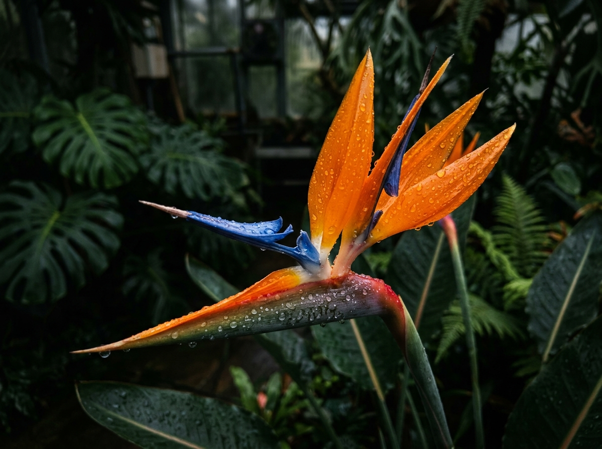
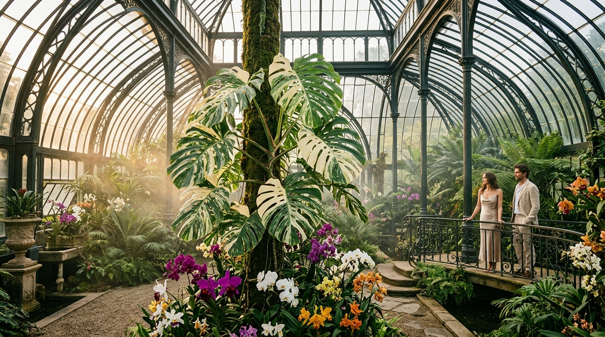

SPECIMEN // 01
Strelitzia Reginae 'Alba'
Архитектурная белая райская птица с величественными изумрудными листьями и кристально-чистыми прицветниками.
Lumina Botanica создает эксклюзивные живые экосистемы, ботанические инсталляции и сенсорную биофильную архитектуру для резиденций, музеев и частных святилищ по всему миру.

«Творить в согласии с природой — значит не просто вносить зелень в интерьер, но почитать тихий, неспешный ритм живой Земли».— Астрид Вэнс, главный ботаник и основатель
Наши ландшафтные архитекторы объединяют комнатные микроклиматы, автоматизированное туманообразование с питательными веществами и циркадное освещение музейного уровня для вертикальных лесов.